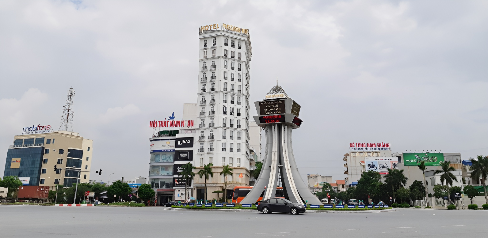
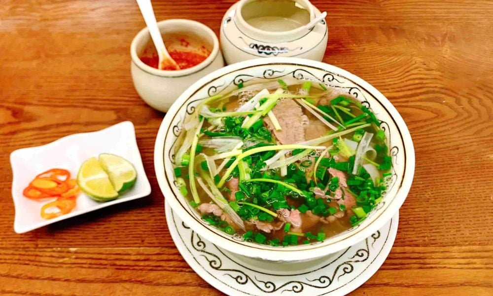
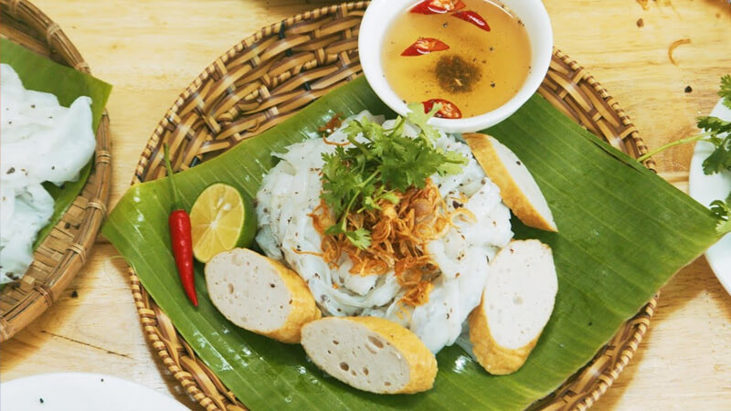
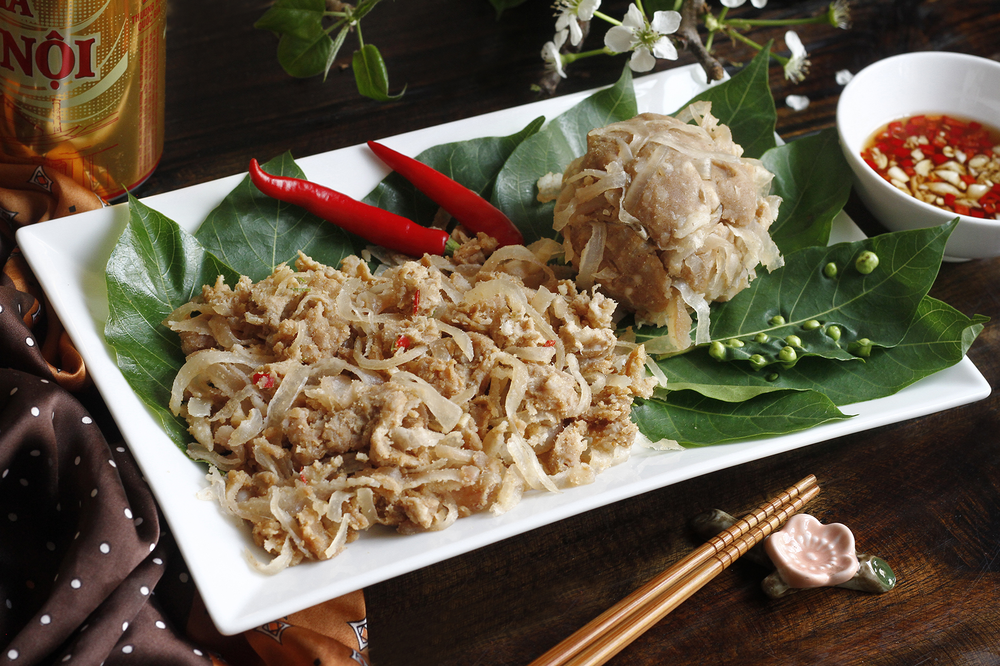
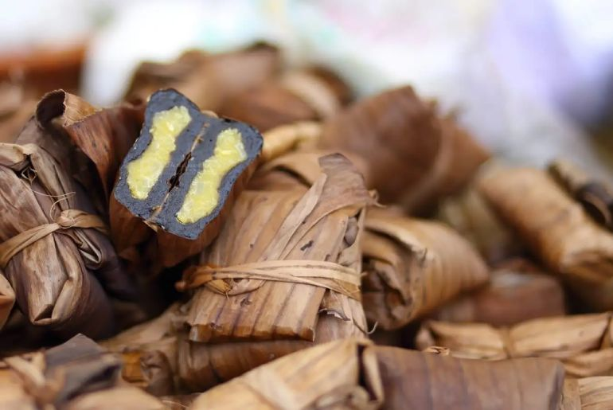
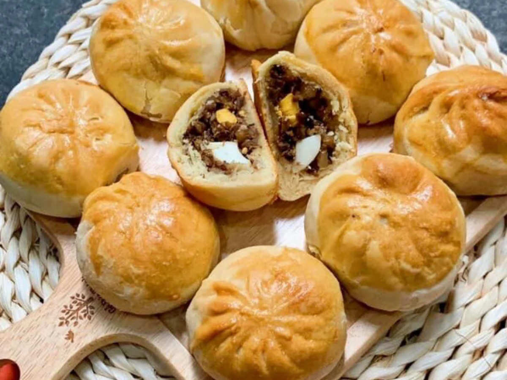
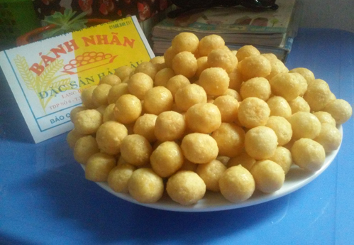

Phở bò Nam Định được xem là niềm tự hào của vùng đất Thành Nam, với lịch sử hơn 100 năm từ làng Vân Cù, gắn liền với những gánh phở rong ngày xưa...

Bánh cuốn Làng Kênh có từ lâu đời là món đặc sản Nam Định không thua gì bánh cuốn Thanh Trì mà bạn biết đến. Các lớp bánh mỏng tang như lụa mà vẫn có độ dai, được rắc thêm thịt băm, mộc nhĩ rồi cuốn lại. Khi ăn sẽ rắc thêm tí hành phi thơm, giòn rụm lên. Bánh được ăn kèm với nước mắm vị chua ngọt và cay cay vị ớt làm món ăn ngon khó cưỡng.

Một món đặc sản có từ lâu đời của Nam Định đó là nem nắm Giao Thủy, bạn có thể mua về làm quà tặng cho gia đình, bạn bè. Nguyên liệu để làm món nem này được chọn lựa kỹ càng, phải tươi ngon, hấp dẫn. Gồm có bì thịt heo rắn chắc được làm sạch sẽ, thái mỏng thủ công rồi trộn đều với nem thính, tỏi, ớt tạo nên hương vị đậm đà, đặc trưng.

Nhắc đến bánh gai thì không thể bỏ qua bánh gai Nam Định, một món đặc sản trứ danh, hấp dẫn. Để làm được loại bánh này, bạn phải dùng lá gai và gạo nếp kết hợp với nhau tạo nên sự thơm ngậy và dẻo mịn. Phần nhân bánh chủ yếu từ đậu xanh giã nhuyễn kết hợp với các nguyên liệu như: Dừa, lạc, hạt sen và thịt mỡ.

Một món ngon đặc sản dân dã của đất Thành Nam mà bạn nên biết đến là bánh xíu páo. Nghe cái tên rất lạ, nhưng bánh xíu páo là loại bánh có màu vỏ như bánh nướng, mềm và thơm. Bên trong nhân gồm có thịt xíu băm, trứng, bột mì, chút mỡ heo và các gia vị đặc trưng của người Nam Định. Khi ăn bạn sẽ cảm nhận được lớp vỏ ngoài hơi rắn nhưng bên trong mềm, mặn vừa ăn.

Gọi là bánh nhãn nhưng không phải làm từ trái nhãn hay long nhãn mà là làm từ các nguyên liệu gạo nếp, trứng gà, đường và mỡ heo. Qua bàn tay khéo léo của người thợ, nặn bánh thành từng viên tròn trịa đều nhau, có màu vàng óng, khi ăn cảm thấy giòn và ngọt.
Hy vọng bạn đã có thêm chút hương vị ẩm thực Nam Định. Hãy một lần đến và thưởng thức nhé!